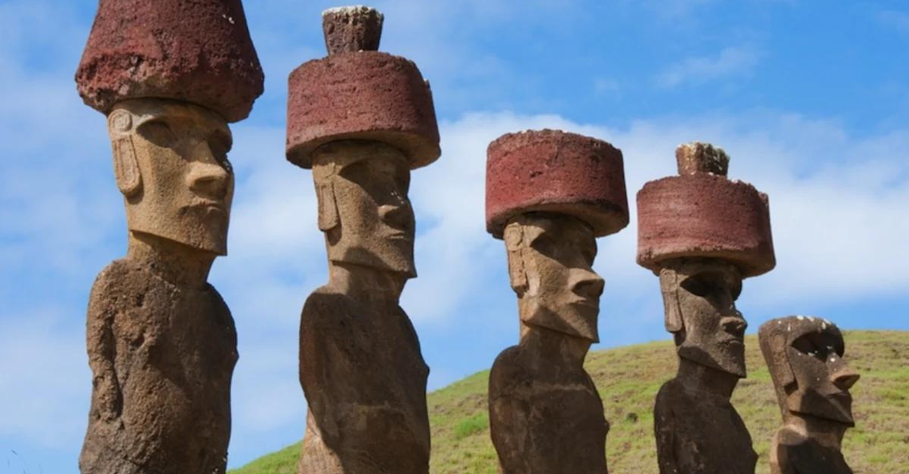
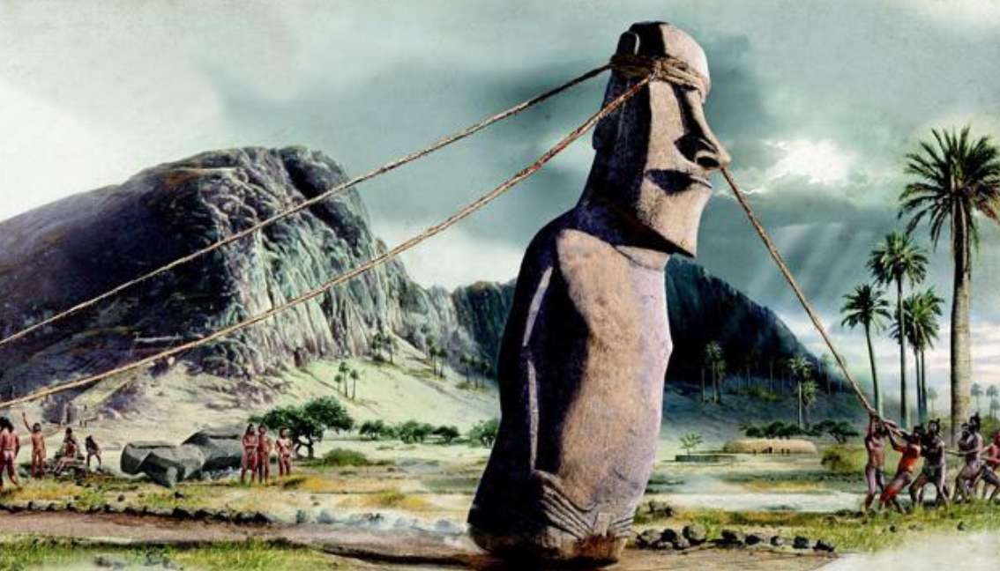
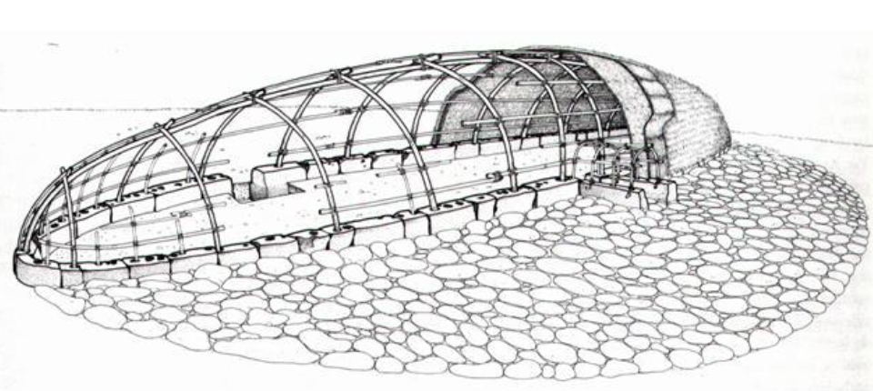
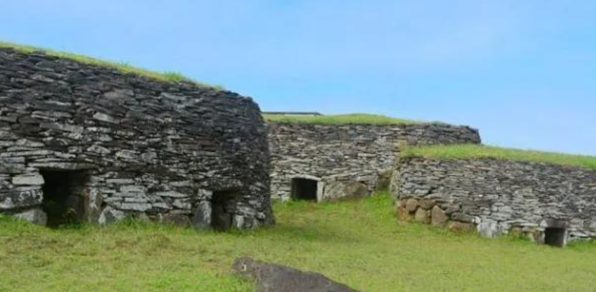
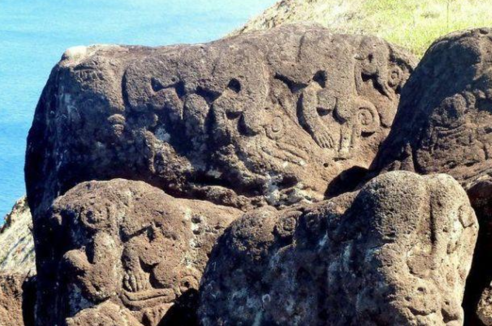

Greeting Word: Iorana
Current Population: 3,000
Location: Rapa Nui is located about 4,300 miles southeast of Hawaii (it's actually closer to Antarctica). It is approximately 2,000 miles to the East of Tahiti and approximately 2,200 miles off the coast of Chile, making it one of the most isolated islands in the world. Its nearest neighbor, tiny Pitcairn Island is over 1,200 miles away.
Fact: Rapa Nui, according to research and oral traditions, was once covered with trees, which have since all been cut down, possibly to aid in the construction and transportation of the almost 900 moai or stone monuments.
There has been much controversy and confusion concerning the origins of the Easter Islanders. Thor Heyerdahl proposed that the people who built the statues were of Peruvian descent, due to a similarity between Rapa Nui and Incan stonework. Some have suggested that Easter Island is the remnant of a lost continent, or the result of an extra-terrestrial influence. Archaeological evidence, however, indicates discovery of the island by Polynesians at about 400 AD - led, according to legend, by Hotu Matua. Upon their arrival, an impressive and enigmatic culture began to develop. In addition to the statues, the islanders possessed the Rongorongo script; the only written language in Oceania. The island is also home to many petroglyphs (rock carvings), as well as traditional wood carvings, tapa (barkcloth) crafts, tattooing, string figures, dance and music.
Easter Island forms the eastern apex of the Polynesian Triangle. Rapa Nui is a small volcanic island that encompasses about 67 square miles of land mass, and at its highest point rises to about 1,700 feet. It is famous throughout the world for its historic stone statues, which the Polynesian people there call moai.
Rapa Nui is located about 4,300 miles southeast of Hawaii (it's actually closer to Antarctica). It is approximately 2,000 miles to the East of Tahiti and approximately 2,200 miles off the coast of Chile, making it one of the most isolated islands in the world. Its nearest neighbor, tiny Pitcairn Island is over 1,200 miles away. Rapa Nui, according to research and oral traditions, was once covered with trees, which have since all been cut down, possibly to aid in the construction and transportation of the almost 900 moai or stone monuments.
Oral tradition says the years between discovery and first contact with the western world were filled with growth to a population as large as 10,000, as well as the creation of the moai, but also with civil warfare, cannibalism and the complete deforestation of the land. Just under 3,000 people live on Rapa Nui today, most of them Polynesians. Like many of the other Pacific islands during the 18th through early 20th centuries, European diseases and indentured labor practices decimated the population. At one point in the early 1900s there were only 111 Rapa Nui people left on the island; and while the slowly growing population has managed to hang on to much of their Polynesian culture, a great deal was also lost forever.
For example, the people of Rapa Nui may have been the only Polynesians to have something akin to a writing system in the form of their rongorongo tablets, a few samples of which have survived to present times in widespread museums. The ability to translate them, however, seems to have been lost forever as there is no one alive today who can read or translate the tablets.
Dutch Admiral Jacob Roggeveen came upon Rapa Nui on Easter Sunday, 1722, hence the English name Easter Island. In 1852 Chile annexed the island, and it remains a territory of that nation to this day.
THE PCC EXHIBIT:
The Polynesian Cultural Center added this Rapa Nui exhibit as part of its 40th anniversary celebration in 2003.
In preparing for the new exhibit, the Polynesian Cultural Center, with the consent of the government and cultural elders of Rapa Nui, invited four respected stone carvers to Laie, Hawaii, where they created seven authentic moai: two of them approximately 6 meters long are reclining (one of them intentionally left partially finished) and the other five about 3.5 meters high have been erected on an ahu or burial platform patterned after the famous one in Rapa Nui: Ahu Nau Nau at Anakena.
When the four Rapa Nui carvers finished their work in the spring of 2003, they named the platform where the five moai now stand Ahu Tu'u Koihu in honor of the first Rapa Nui chief who oral history says started the tradition of building the statues that have become icons of Polynesia to the rest of the world.
AHU: Burial Platform
The ahu, or burial base or platform, you see before you were traditionally used as a burial place for the Ariki or King and Tagata Honui or Chiefs. This one is patterned afteran actual ahu called Ahu Nau Nau in Anakena on Easter Island, which is believed to be the bay where the first Polynesian settlers of Rapa Nui arrived under the leadership of Chief Hotu Matu’a of what is now French Polynesia.
Moai is the word given to describe these carved stone statues in general. The moai here on the ahu represent each Ariki or Tagata Honui that were traditionally buried beneath it. Each stone carving is unique and have their own distinguishable characteristics that resemble the individuals they are representing. After the Moai are erected in their final resting place, they are given the same name as the person they portray.
The pukao, or large red scoria stone on the head of the Moai, represents the statue’s hair. Ancient Rapa Nui men had long reddish colored hair bleached by the sun, which they would bundle up and wear on the top of their head.
The mata, or eyes on the moai, are carved from white coral found on the ocean’s floor. The carvers told how they each dived and brought pieces of white coral with them to Hawaii to make the "eyes" for the moai; and after they placed these eyes into the sockets they had carved, then the moai were no longer "blind," but now "could see”. The eyes give life to the moai and, therefore, to the people who were [traditionally] buried under the ahu." The inner layer, or pupil of the eye is made of the finest red scoria stone on Easter Island.
MOAI:
Since they came to the attention of the outside world, the moai have captured the fascination of everyone who sees them. These stone statues range from just a few feet high to almost 80 feet high, and are made from scoria — or hardened volcanic ash. Unfortunately, scoria is not very durable, and ongoing conservation of the existing moai is a major concern. It’s believed that all the moai on Rapa Nui were carved from the same quarry, Rano Raraku. There are still some unfinished Moai in the quarry today.
In all, the islanders created almost 900 statues, although the majority of those were never transported from the quarry or even finished.
It is unclear why the Easter Islanders turned to statue construction on such a massive scale. Their obsession with it arguably contributed to their downfall as they depleted more and more of the forests for use in the process of moving the giant moai. While the ‘why’ is a mystery, ‘where’ it happened and to a large degree ‘how’ it happened is fairly clear. Each moai was born from the massive caldera of Rano Raraku.
The soft volcanic tuff was perfect material for statue carving. Using harder volcanic rock implements they were able to first sketch out the moai's outline in the rock wall and then systematically chip away at it until the moai was held in place by a thin "keel."
The moai carvers were master craftsmen that had rose through the ranks of a "carver's guild." The production of the statues was most likely through conscripted labor with many rituals and ceremonies performed throughout the process. The stone carvers were ingenious in making the most out of sections of rock. moai can be seen carved in all directions in the cliff face. If a defect would appear in the rock the statue would be abandoned and they moved on to another area. They took advantage of fissures in the volcanic walls and also variations in colors. In short they were true artists.
Many theories have been put forth about why they were carved and how people without sophisticated machinery could move the heavy megaliths. One island tradition says those moai that were eventually set up on ahu platforms facing the ocean "walked" there. Those with more of an engineering orientation say this is feasible,
suggesting the people may have used a series of long ropes and log rollers to tip a moai a little toward one side and then pivot it forward on the resting point, much as one person can move a heavy object by rocking it forward without having to pick it up. This and similar theories also suggest that all of the trees on the island were eventually cut down to provide the log rollers. Another widely publicized author at one time suggested extraterrestrial beings were somehow involved in the process.
The largest one is still in the mountain quarry and measures approximately 70 feet tall. On Rapa Nui, there are several moai that can be found on the ground in much the same way as this Moai is displayed. This was a consequence of tidal waves and other natural disasters, erosion and tribal wars, which resulted in rivals toppling the Moai on their enemies.
HARE VAKA:
Dwelling House
Hare Vaka, or boat house, is the name Rapa Nui people called this structure, because when completed it looks like an overturned canoe. This structure is a scaled down model. Traditionally theses structures extended 30 – 60 feet. There are records however of Hare Vaka that measured up to 300 feet, or roughly, the size of a football field.
The people of Rapa Nui say the aerodynamic shape of the hare vaka helps counter strong island winds. The lack of trees and any significantly large mountains or hills meant there was no natural barriers to the strong winds that swept right over the islands.
MANA VAI:
Protected Garden Pit This structure was created to protect the delicate plants from strong winds. Rapa Nui has an average elevation of 200 feet above sea level. The winds that are generated at sea have little to no resistance from the islands.
Rapa Nui people found that they could protect the plants from the winds by creating rock walls around them. These walls would also help the plants gather water from the infrequent rains during the summer months. The Mana Vai housed Rapa Nui staple foods such as taro, banana, sugar cane, and sweet potato.
This Mana Vai has been left half finished to allow those taking the canoe tour a better view of the interior structure.
HARE MA’EA:
Stone Structures
This is the name Rapa Nui people call this house, because it is constructed entirely of rocks, including the roof. These structures were created mostly for ceremonial purpose during the Tangata Manu, or birdman period. Several structures like this can be found on the edge of Oronga crater in Rapa Nui. This is where the traditional Tangata Manu, or birdman competitions were held.
BIRDMAN COMPETITIONS:
High on the rim of the crater known as Rano Kau was the ceremonial village of Orongo. Built to worship the god of fertility, Makemake, it became the site of a grueling competition. Each year leadership of the island was determined by the individual who could scale down the vertical slopes, swim out to one of three small islets in shark-infested waters, and bring back the egg of the nesting sooty tern unbroken. The one who did this successfully was considered the Birdman of the year and was bestowed with special honors and privileges.
One of the most fascinating sights at Orongo are the hundreds of petroglyphs carved with birdman and Makemake images. Carved into solid basalt, they have resisted ages of harsh weather. It has been suggested that the images represent birdman competition winners. Over 480 Birdman petroglyphs have been found on the island, mostly around Orongo.
Terms:
Ahu – Sacred stone platform used as a burial site for Ariki (kings) and Tagata Honui (chiefs). Each moai was erected on an ahu, symbolizing ancestral authority and protection.
Ahu Nau Nau – One of the most famous ahu platforms in Rapa Nui, located in Anakena Bay, believed to be the first settlement site led by Chief Hotu Matuʻa.
Ahu Tuʻu Koihu – The name given to the PCC’s Rapa Nui ahu platform, honoring the first chief credited with starting the moai-building tradition.
Ariki – King or high chief of Rapa Nui, traditionally buried beneath the ahu with moai statues erected in their honor.
Birdman Competition (Tangata Manu) – Annual contest held at Orongo crater where competitors swam to nearby islets to retrieve the first sooty tern egg, symbolizing divine favor and leadership for the year.
Hare Maʻea – Stone house built entirely from rocks, used mainly for ceremonial purposes during the Tangata Manu period.
Hare Vaka – Boat-shaped dwelling house resembling an overturned canoe, designed aerodynamically to resist strong island winds.
Hotu Matuʻa – Legendary first Polynesian chief and settler of Rapa Nui, who led his people to the island from what is now French Polynesia.
Iorana – Greeting word in Rapa Nui, meaning “Hello” or “Good day.”
Makemake – God of fertility and creation worshiped during the Birdman ceremonies at Orongo village.
Mana Vai – Protected garden pit built with rock walls to shield crops from strong winds and retain moisture; used to grow taro, banana, sugar cane, and sweet potato.
Matā – Eyes of the moai statues, traditionally carved from white coral with red scoria pupils, believed to give the statues spiritual sight and life.
Moai – Massive stone statues carved from volcanic rock representing deified ancestors; about 900 were created on Rapa Nui, most erected on ahu platforms.
Pukao – Large red scoria topknots placed on the heads of moai statues, representing the traditional red hair of ancient Rapa Nui men.
Rano Raraku – The volcanic quarry where nearly all moai were carved; still contains unfinished statues showing carving techniques.
Rano Kau – Crater and ceremonial site on Rapa Nui where the Orongo village and Birdman competitions were held.
Rongorongo – Ancient script unique to Rapa Nui, believed to be the only written language in Polynesia; its meaning has been lost.
Tagata Honui – Chiefs or noble class of Rapa Nui society, often honored with moai statues and burials beneath the ahu.
Tangata Manu – The Birdman, the winner of the annual Orongo competition who gained leadership and sacred status for the year.